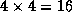
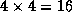

![[DBPP]](pictures//asm_color_tiny.gif)


![[Search]](pictures//search_motif.gif)
In the first two stages of the design process, we partitioned the computation to be performed into a set of tasks and introduced communication to provide data required by these tasks. The resulting algorithm is still abstract in the sense that it is not specialized for efficient execution on any particular parallel computer. In fact, it may be highly inefficient if, for example, it creates many more tasks than there are processors on the target computer and this computer is not designed for efficient execution of small tasks.
In the third stage, agglomeration, we move from the abstract toward the concrete. We revisit decisions made in the partitioning and communication phases with a view to obtaining an algorithm that will execute efficiently on some class of parallel computer. In particular, we consider whether it is useful to combine, or agglomerate, tasks identified by the partitioning phase, so as to provide a smaller number of tasks, each of greater size (Figure 2.11). We also determine whether it is worthwhile to replicate data and/or computation.
Figure 2.11: Examples of agglomeration. In (a), the size of tasks is
increased by reducing the dimension of the decomposition from three to
two. In (b), adjacent tasks are combined to yield a three-dimensional
decomposition of higher granularity. In (c), subtrees in a
divide-and-conquer structure are coalesced. In (d), nodes in a tree
algorithm are combined.
The number of tasks yielded by the agglomeration phase, although reduced, may still be greater than the number of processors. In this case, our design remains somewhat abstract, since issues relating to the mapping of tasks to processors remain unresolved. Alternatively, we may choose during the agglomeration phase to reduce the number of tasks to exactly one per processor. We might do this, for example, because our target parallel computer or program development environment demands an SPMD program. In this case, our design is already largely complete, since in defining P tasks that will execute on P processors, we have also addressed the mapping problem. In this section, we focus on general issues that arise when increasing task granularity. Specific issues relating to the generation of SPMD programs are discussed in Section 2.5.
Three sometimes-conflicting goals guide decisions concerning agglomeration and replication: reducing communication costs by increasing computation and communication granularity, retaining flexibility with respect to scalability and mapping decisions, and reducing software engineering costs. These goals are discussed in the next three subsections.
In the partitioning phase of the design process, our efforts are focused on defining as many tasks as possible. This is a useful discipline because it forces us to consider a wide range of opportunities for parallel execution. We note, however, that defining a large number of fine-grained tasks does not necessarily produce an efficient parallel algorithm.
One critical issue influencing parallel performance is communication costs. On most parallel computers, we have to stop computing in order to send and receive messages. Because we typically would rather be computing, we can improve performance by reducing the amount of time spent communicating. Clearly, this performance improvement can be achieved by sending less data. Perhaps less obviously, it can also be achieved by using fewer messages, even if we send the same amount of data. This is because each communication incurs not only a cost proportional to the amount of data transferred but also a fixed startup cost. These issues are discussed in detail in Chapter 3, where we use analytic models to quantify communication costs.
In addition to communication costs, we may need to be concerned with task creation costs. For example, the performance of the fine-grained search algorithm illustrated in Figure 1.13, which creates one task for each search tree node, is sensitive to task creation costs.
Figure 2.12: Effect of increased granularity on communication costs in
a two-dimensional finite difference problem with a five-point stencil.
The figure shows fine- and coarse-grained two-dimensional partitions
of this problem. In each case, a single task is exploded to show its
outgoing messages (dark shading) and incoming messages (light
shading). In (a), a computation on an  grid is partitioned
into tasks, each responsible for a single point, while
in (b) the same computation is partioned into tasks, each
responsible for 16 points. In (a), communications
are required, 4 per task; these transfer a total of 256 data values.
In (b), only  communications are required, and only
grid is partitioned
into tasks, each responsible for a single point, while
in (b) the same computation is partioned into tasks, each
responsible for 16 points. In (a), communications
are required, 4 per task; these transfer a total of 256 data values.
In (b), only  communications are required, and only
 data values are transferred.
data values are transferred.
If the number of communication partners per task is small, we can often reduce both the number of communication operations and the total communication volume by increasing the granularity of our partition, that is, by agglomerating several tasks into one. This effect is illustrated in Figure 2.12. In this figure, the reduction in communication costs is due to a surface-to-volume effect . In other words, the communication requirements of a task are proportional to the surface of the subdomain on which it operates, while the computation requirements are proportional to the subdomain's volume. In a two-dimensional problem, the ``surface'' scales with the problem size while the ``volume'' scales as the problem size squared. Hence, the amount of communication performed for a unit of computation (the communication/computation ratio ) decreases as task size increases. This effect is often visible when a partition is obtained by using domain decomposition techniques.
A consequence of surface-to-volume effects is that higher-dimensional decompositions are typically the most efficient, other things being equal, because they reduce the surface area (communication) required for a given volume (computation). Hence, from the viewpoint of efficiency it is usually best to increase granularity by agglomerating tasks in all dimensions rather than reducing the dimension of the decomposition. This issue is explored quantitatively in Example 3.4 in Chapter 3.
The design of an efficient agglomeration strategy can be difficult in problems with unstructured communications, such as the finite element problem of Figure 2.9. Specialized techniques that can be used in such cases are discussed in Section 2.5.1.
We can sometimes trade off replicated computation for reduced communication requirements and/or execution time. For an example, we consider a variant of the summation problem presented in Section 2.3.2, in which the sum must be replicated in each of the N tasks that contribute to the sum.
Figure 2.13: Using an array (above) and a tree (below) to perform a
summation and a broadcast. On the left are the communications
performed for the summation (s); on the right, the communications
performed for the broadcast (b). After or  steps,
respectively, the sum of the N values is replicated in each of the
N tasks.
steps,
respectively, the sum of the N values is replicated in each of the
N tasks.
A simple approach to distributing the sum is first to use either a ring- or tree-based algorithm to compute the sum in a single task, and then to broadcast the sum to each of the N tasks. The broadcast can be performed using the same communication structure as the summation; hence, the complete operation can be performed in either 2(N-1) or steps, depending on which communication structure is used (Figure 2.13).
These algorithms are optimal in the sense that they do not perform any unnecessary computation or communication. However, there also exist alternative algorithms that execute in less elapsed time, although at the expense of unnecessary (replicated) computation and communication. The basic idea is to perform multiple summations concurrently, with each concurrent summation producing a value in a different task.
We first consider a variant of the array summation algorithm based on this idea. In this variant, tasks are connected in a ring rather than an array, and all N tasks execute the same algorithm so that N partial sums are in motion simultaneously. After N-1 steps, the complete sum is replicated in every task. This strategy avoids the need for a subsequent broadcast operation, but at the expense of redundant additions and unnecessary communications. However, the summation and broadcast complete in N-1 rather than 2(N-1) steps. Hence, the strategy is faster if the processors would otherwise be idle waiting for the result of the summation.
The tree summation algorithm can be modified in a similar way to avoid
the need for a separate broadcast. That is, multiple tree summations
are performed concurrently so that after steps each task has
a copy of the sum. One might expect this approach to result in
 additions and communications, as in the ring algorithm.
However, in this case we can exploit redundancies in both computation
and communication to perform the summation in just
additions and communications, as in the ring algorithm.
However, in this case we can exploit redundancies in both computation
and communication to perform the summation in just  operations. The resulting communication structure, termed a
butterfly, is illustrated in Figure 2.14. In each of the
operations. The resulting communication structure, termed a
butterfly, is illustrated in Figure 2.14. In each of the
 stages, each task receives data from two tasks, performs a
single addition, and sends the result of this addition to two tasks in
the next stage.
stages, each task receives data from two tasks, performs a
single addition, and sends the result of this addition to two tasks in
the next stage.
Figure 2.14: The butterfly communication structure
can be used to sum N
values in  steps. Numbers located
in the bottom row of tasks are propagated up through
steps. Numbers located
in the bottom row of tasks are propagated up through  intermediate stages, thereby producing the complete sum in each task
in the top row.
intermediate stages, thereby producing the complete sum in each task
in the top row.
Figure 2.15: The communication structures that result when tasks at
different levels in a tree or butterfly structure are agglomerated.
From top to bottom: a tree, a butterfly, and an equivalent
representation of the butterfly as a hypercube. In each case,
N=8
, and each channel is labeled with the step in which it is
used for communication.
Agglomeration is almost always beneficial if analysis of communication requirements reveals that a set of tasks cannot execute concurrently. For example, consider the tree and butterfly structures illustrated in Figures 2.8 and 2.14. When a single summation problem is performed, only tasks at the same level in the tree or butterfly can execute concurrently. (Notice, however, that if many summations are to be performed, in principle all tasks can be kept busy by pipelining multiple summation operations.) Hence, tasks at different levels can be agglomerated without reducing opportunities for concurrent execution, thereby yielding the communication structures represented in Figure 2.15. The hypercube structure shown in this figure is a fundamental communication structure that has many applications in parallel computing. It is discussed in greater detail in Chapter 11.
It is easy when agglomerating tasks to make design decisions that limit unnecessarily an algorithm's scalability. For example, we might choose to decompose a multidimensional data structure in just a single dimension, reasoning that this provides more than enough concurrency for the number of processors available. However, this strategy is shortsighted if our program must ultimately be ported to larger parallel computers. It may also lead to a less efficient algorithm, as discussed in Section 2.4.1.
The ability to create a varying number of tasks is critical if a program is to be portable and scalable. As discussed in Chapter 1, good parallel algorithms are designed to be resilient to changes in processor count. This flexibility can also be useful when tuning a code for a particular computer. If tasks often block waiting for remote data, it can be advantageous to map several tasks to a processor. Then, a blocked task need not result in a processor becoming idle, since another task may be able to execute in its place. In this way, one task's communication is overlapped with another task's computation. This technique, termed overlapping computation and communication, is discussed in Chapter 3.
A third benefit of creating more tasks than processors is that doing so provides greater scope for mapping strategies that balance computational load over available processors. As a general rule of thumb, we could require that there be at least an order of magnitude more tasks than processors. This issue is discussed in the next section.
The optimal number of tasks is typically best determined by a combination of analytic modeling and empirical studies. Flexibility does not necessarily require that a design always create a large number of tasks. Granularity can be controlled by a compile-time or runtime parameter. What is important is that a design not incorporate unnecessary limits on the number of tasks that can be created.
So far, we have assumed that our choice of agglomeration strategy is determined solely by a desire to improve the efficiency and flexibility of a parallel algorithm. An additional concern, which can be particularly important when parallelizing existing sequential codes, is the relative development costs associated with different partitioning strategies. From this perspective, the most interesting strategies may be those that avoid extensive code changes. For example, in a code that operates on a multidimensional grid, it may be advantageous to avoid partitioning altogether in one dimension, if doing so allows existing routines to be reused unchanged in a parallel program.
Frequently, we are concerned with designing a parallel algorithm that must execute as part of a larger system. In this case, another software engineering issue that must be considered is the data distributions utilized by other program components. For example, the best algorithm for some program component may require that an input array data structure be decomposed in three dimensions, while a preceding phase of the computation generates a two-dimensional decomposition. Either one or both algorithms must be changed, or an explicit restructuring phase must be incorporated in the computation. Each approach has different performance characteristics. These issues are discussed in Chapter 4.
We have now revised the partitioning and communication decisions developed in the first two design stages by agglomerating tasks and communication operations. We may have agglomerated tasks because analysis of communication requirements shows that the original partition created tasks that cannot execute concurrently. Alternatively, we may have used agglomeration to increase computation and communication granularity and/or to decrease software engineering costs, even though opportunities for concurrent execution are reduced. At this stage, we evaluate our design with respect to the following checklist. Several of these questions emphasize quantitative performance analysis, which becomes more important as we move from the abstract to the concrete; this topic is addressed in Chapter 3.
© Copyright 1995 by Ian Foster